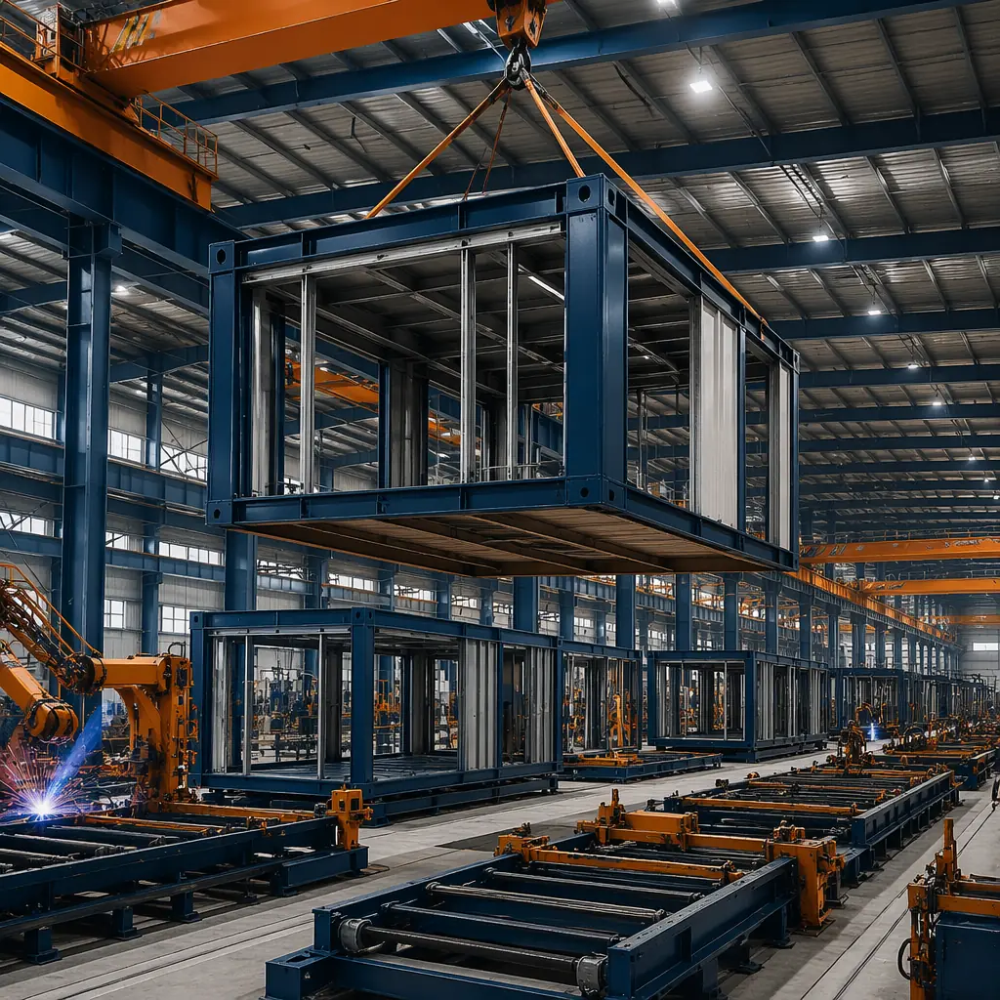
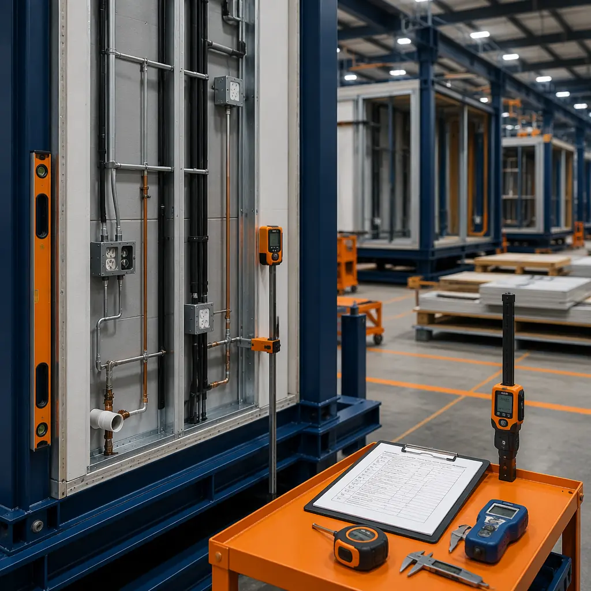
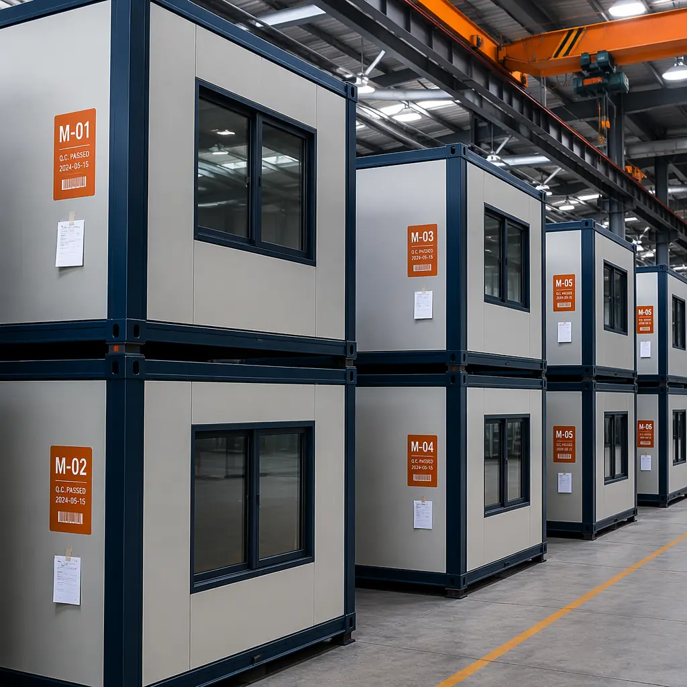

Choosing a modular construction partner is fundamentally different from hiring a general contractor. When 80–90% of your building is produced inside a factory, the factory is your construction site. The partner you select determines not just cost and timeline — they determine quality tolerances, material standards, finishing precision, and whether your building performs as specified for the next 30 years. Based on 500+ projects across 18 countries, here is the evaluation framework that separates high-performance modular manufacturers from the rest.

1. Factory Tour — What You Should Actually Look For
A factory tour is the single most revealing step in partner evaluation. But most developers tour the wrong things — they look at finished modules and clean floors, not at what determines build quality. Here is what separates a production-quality factory from an assembly shed:
- Climate control: Temperature and humidity must be regulated year-round. Steel expands at 1.2mm per meter per 10°C change. A factory without climate control produces modules with dimensional drift between summer and winter batches — a problem that surfaces as misaligned connections during site assembly.
- Jig and fixture precision: Look at the welding jigs and framing stations. High-quality factories use CNC-machined steel jigs with ±1mm tolerance. Low-quality operations use tape measures and chalk lines — the same tools a site crew uses, negating the precision advantage of factory construction.
- Material staging: Steel, insulation, drywall, and MEP components should be stored in labeled, weather-protected zones with FIFO (first-in-first-out) inventory rotation. Disorganized material storage = disorganized production = quality variability between modules.
- In-line quality gates: At each station — framing, MEP rough-in, drywall, finishing — there should be a visible quality checklist and sign-off procedure. Ask to see the actual QC records from the last completed project. If they cannot produce them in 5 minutes, the system exists on paper only.

2. Certifications That Actually Matter
Every manufacturer lists certifications. The question is which ones reflect genuine third-party verification versus self-declared compliance. Here is the hierarchy:
| Certification | What It Actually Verifies | Audit Frequency |
|---|---|---|
| ISO 9001:2015 | Quality management system — documented processes, continuous improvement, corrective action | Annual surveillance + 3-year recertification |
| ISO 14001:2015 | Environmental management — waste tracking, material sourcing, energy consumption | Annual surveillance + 3-year recertification |
| CE Marking | Structural safety, fire performance, acoustic performance — mandatory for EU/EEA projects | Factory Production Control (FPC) ongoing |
| ICC-ES / IBC | US building code compliance — structural, fire, mechanical, plumbing | Evaluation report renewal required |
| AISC / AWS | Steel fabrication and welding certification — verifies structural frame integrity | Annual welder re-qualification |
Ask to see the actual certificates with expiry dates. A manufacturer whose ISO certificate expired 6 months ago but still displays the logo is a red flag. Also ask: "Who is your notified body?" — legitimate manufacturers can answer this in one sentence. For a deeper look at how modular construction meets and exceeds building code requirements, see our analysis of modular construction fire safety standards and code compliance.
3. Engineering Depth — In-House vs Outsourced
The single biggest variable in modular project outcomes is whether engineering is done in-house or outsourced to a third-party firm that has never set foot in the factory.
In-house engineering teams understand the factory's specific jigs, material handling constraints, and production sequencing. They design modules that can actually be built on the existing line without modification. Outsourced engineers design modules that look correct on paper but require production workarounds — each workaround adding cost, time, and quality risk.
Key questions to ask:
- How many structural engineers are on staff full-time? (Not "available through partners" — on payroll)
- Does the engineering team participate in factory floor reviews, or do they work remotely?
- What BIM software platform do they use, and can they provide a sample coordination model?
- How do they handle design changes after production starts? (The right answer involves a formal ECN — Engineering Change Notice — process)
4. Production Capacity — Beyond the Brochure Number
Every manufacturer quotes a modules-per-year figure. That number means nothing without context. The real question: how many modules of YOUR project type and size can they produce simultaneously, and what is their current backlog?
A factory that claims 2,000 modules/year capacity but is currently running at 85% utilization with a 9-month backlog cannot absorb your 200-module hotel project without delaying either your job or someone else's. The evaluation should cover:
- Current utilization rate: Ask directly. A manufacturer unwilling to share this number is hiding something.
- Line configuration: How many parallel production lines? Can they dedicate a line to your project, or will your modules share line time with 3 other projects?
- Shift structure: Single shift = 8 hours of production per day. Double shift = 16 hours. This directly determines weekly throughput.
- Module size capability: Maximum module dimensions (length, width, height) and weight. A factory optimized for 12m hotel modules may struggle with 16m apartment modules.

5. Supply Chain Depth — Single-Source Risk Assessment
During the 2020–2022 global supply chain disruption, modular manufacturers with diversified supplier networks continued production while single-source-dependent competitors shut down for months. Your partner's supply chain resilience is your project's timeline insurance.
Request the following:
- Steel sourcing: Which mills, which countries? How many weeks of inventory do they maintain? In 2021–2022, steel lead times extended from 4 weeks to 16+ weeks. Manufacturers without buffer inventory lost entire quarters of production.
- MEP components: Electrical panels, HVAC units, plumbing fixtures. Are these sourced from multiple suppliers or a single vendor? Single-source MEP = single point of failure.
- Finishing materials: Flooring, millwork, fixtures. Are these stocked in-house or ordered per-project? Stocked materials mean faster turnaround and consistent quality across all modules in your project.
On a recent 120-unit apartment project in Texas, the developer's modular partner maintained 8 weeks of steel inventory and dual-source MEP relationships. When a primary electrical panel supplier experienced a 12-week delay, the secondary supplier picked up the order within 2 weeks — zero timeline impact. This is what supply chain resilience looks like in practice.
6. Timeline Track Record — Ask for the Data, Not the Anecdote
Every manufacturer will tell you they deliver on time. Ask for the data: "For your last 10 projects of similar size and type to ours, what was the actual vs. contracted delivery date for the final module?"
A manufacturer that tracks this metric and shares it readily is operating with process control. One that deflects to anecdotes ("We've never missed a deadline") is not. The industry benchmark: top-quartile modular manufacturers deliver within 5% of the contracted timeline on 90%+ of projects. For perspective on how modular timelines compare to conventional construction, see our 2026 cost and timeline comparison between modular and traditional construction.
7. Financial Stability — The Due Diligence Developers Skip
Your modular partner will be holding significant advance payments for materials procurement. If they face financial distress mid-project, your modules — and your money — are at risk. This due diligence is uncomfortable but essential:
- Years in operation: Less than 5 years = higher risk. The modular industry has a 40% failure rate for startups in the first 3 years, typically from underestimating factory overhead.
- Bonding capacity: Can they provide performance and payment bonds for your project size? If the answer is no, ask why.
- Warranty reserves: How do they fund warranty obligations? A manufacturer should have a dedicated reserve account or insurance-backed warranty program, not just a promise in the contract.
- Parent company backing: Is the modular division part of a larger construction or manufacturing group, or is it a standalone entity? Group backing provides financial stability; standalone entities require closer scrutiny.
For a comprehensive framework on evaluating the financial case, our modular construction ROI analysis covers the full cost-benefit picture including partner selection impact on returns. For developers seeking financing, our modular construction financing guide explains how lender evaluation of modular projects differs from conventional construction — including the partner quality factors that lenders scrutinize during underwriting.
8. Site Installation Capability — The 20% That Determines 80% of Success
Factory quality means nothing if site installation is poorly executed. The best module in the world becomes a problem if it is set 5mm out of alignment on the foundation — that 5mm error compounds across 100+ modules into gaps, leaks, and structural stress.
Evaluate the installation team separately from the factory team:
- Crane and rigging expertise: Does the manufacturer employ their own installation crews or subcontract? In-house crews have factory-trained understanding of module connection details that third-party riggers lack.
- Site supervision ratio: How many installation supervisors per crane? The industry best practice is 1 supervisor per crane plus 1 quality inspector per site. Less than that = corners being cut.
- Weather contingency: What is their protocol for rain, wind above 30 km/h, or temperatures below −10°C during installation? A documented weather action plan is a sign of operational maturity.
9. After-Sales — The 5-Year Test
The modular construction relationship does not end when the last module is set. Over the first 5 years of operation, issues will surface — minor settlement, MEP adjustments, finish touch-ups. A partner who disappears after final payment leaves you holding every problem.
Key after-sales indicators:
- Warranty response time: What is the contractual SLA for warranty callbacks? Industry standard is 48-hour response, 5-day resolution for non-emergency issues.
- Spare parts availability: Do they stock replacement components (wall panels, MEP modules, finish materials) for the building types they produce? Without this, a damaged wall panel means custom fabrication — expensive and slow.
- As-built documentation: Do you receive a complete operations and maintenance manual with as-built drawings, MEP schematics, and material specifications? This is non-negotiable for facilities management teams.
10. References — The Most Underused Evaluation Tool
Most developers request references and then never call them, or call and ask the wrong questions. Here is what to ask previous clients:
- "What was the actual vs. promised delivery date for the final module?" — Not the first module, which every manufacturer prioritizes. The final module tells you whether they maintained pace throughout the project.
- "How many punch-list items remained after handover, and how long did resolution take?" — Zero punch-list items is unrealistic; more than 50 items or resolution taking more than 30 days is a red flag.
- "If you built another project, would you use the same manufacturer?" — The only question that matters. Listen carefully to the hesitation before the answer.
- "What surprised you — good or bad — that wasn't in the sales presentation?" — This question surfaces the gaps between marketing and reality.
Partner Evaluation Scorecard
Use this scorecard to compare up to 3 shortlisted partners. Score each item 0 (fail), 1 (partial), or 2 (strong). Minimum acceptable total: 14 out of 20.
| # | Evaluation Criterion | Score (0–2) |
|---|---|---|
| 1 | Factory quality systems — climate control, precision jigs, in-line QC gates | |
| 2 | Certifications — ISO 9001/14001, CE, ICC-ES with current expiry dates | |
| 3 | In-house engineering team size and BIM capability | |
| 4 | Production capacity — current utilization, parallel lines, module size range | |
| 5 | Supply chain resilience — diversified sourcing, inventory buffer weeks | |
| 6 | Timeline track record — actual vs. contracted delivery on last 10 projects | |
| 7 | Financial stability — years operating, bonding capacity, warranty reserves | |
| 8 | Site installation — in-house crews, supervision ratio, weather protocol | |
| 9 | After-sales — warranty SLA, spare parts, as-built documentation | |
| 10 | References — repeat-client rate, punch-list resolution speed |
The modular construction market is maturing rapidly — which means the gap between top-tier manufacturers and the rest is widening, not shrinking. In 2026, the right partner delivers factory precision, predictable timelines, and a building that performs as designed for decades. The wrong partner delivers a building that looks like modular but performs like site-built — minus the cost advantage of either. For a complete walkthrough of what a full-service modular delivery looks like, read our guide to turnkey modular construction from design through handover. Ten questions, honestly answered, will tell you which one you are dealing with.
Ready to evaluate MODURA as your modular construction partner? Contact our team for a factory tour, certification documentation package, and reference project list tailored to your building type and region.